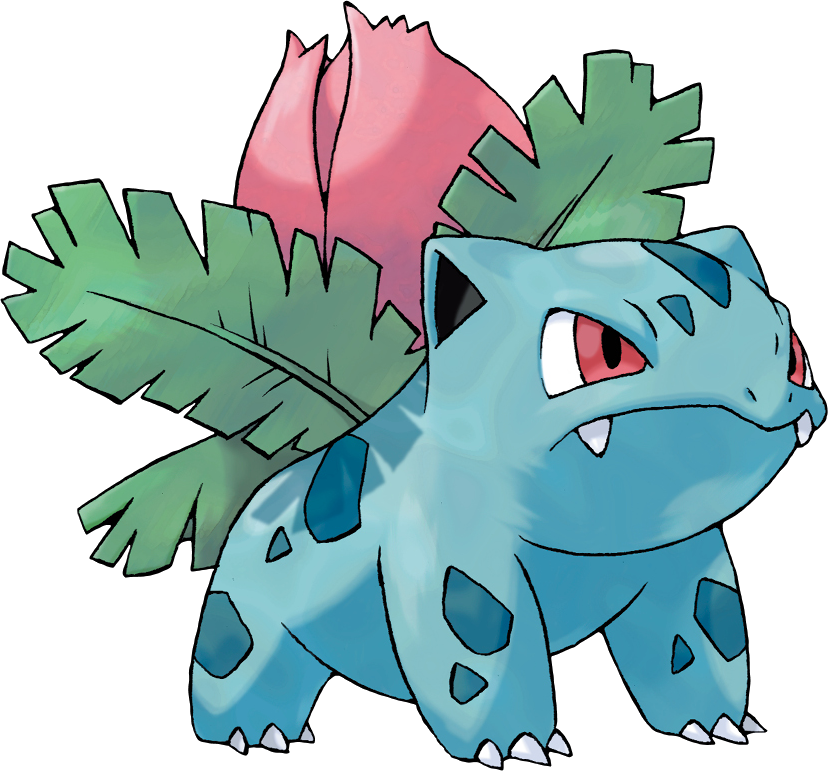

Herbizarre est un Pokémon quadrupède, semblable à un dinosaure. Il a un corps bleu vert avec des taches plus foncées. Deux canines supérieures dépassent de sa bouche quand elle est fermée, et par rapport à sa pré-évolution, ses yeux sont plus petits et plus foncés. Il a sur le haut de sa tête deux oreilles pointues remplies de noir. Il a un petit museau rond et une large bouche. Chacun de ses pieds possède trois griffes pointues et blanches. Le bulbe sur son dos a fleuri et est devenu un gros bourgeon rose dont le poids est tel qu'il empêche Herbizarre de se tenir sur ses pattes postérieures trop longtemps. Une petite tige marron, entourée par quatre larges feuilles, soutient le bourgeon.